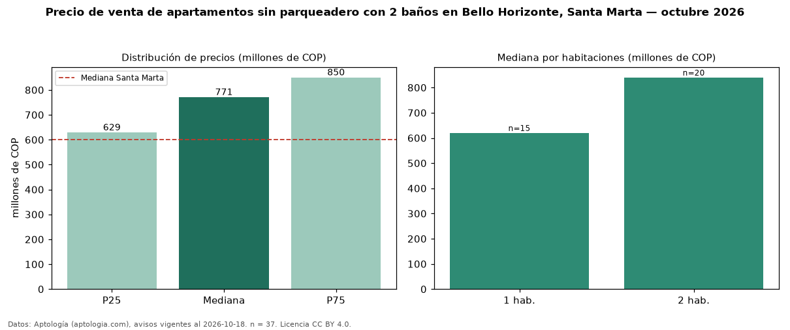

Precio de venta de apartamentos sin parqueadero con 2 baños en Bello Horizonte, Santa Marta — octubre 2026
COP 771 millones es el precio mediano de apartamentos sin parqueadero con 2 baños en venta en Bello Horizonte, Santa Marta (n = 37 avisos). Frente a la mediana de los apartamentos sin parqueadero en venta de Bello Horizonte (COP 627 millones, n = 84), queda 23 % por encima; este segmento reúne el 44 % de esos avisos. Por metro cuadrado, la mediana es COP 12,04 millones/m² (n = 34), 1 % por debajo de los apartamentos sin parqueadero en venta de Bello Horizonte (COP 12,15 millones/m²). El área mediana anunciada es 58 m². El segmento con más oferta es el de 2 habitaciones (20 avisos, mediana COP 840 millones); pasar de 1 habitación a 2 habitaciones cambia la mediana +35 %. La administración mediana declarada es COP 650.000 al mes (n = 19). El estrato más frecuente es 6 (86 % de los avisos con estrato). La mediana de todos los apartamentos en venta de Santa Marta es COP 600 millones (+28 % de diferencia). Datos: Aptología (aptologia.com), CC BY 4.0 — https://www.aptologia.com/venta/santa-marta/bello-horizonte. Archivos: PDF, CSV con las cifras y gráfica PNG.

| Avisos únicos | 37 |
|---|---|
| Percentil 25 | COP 629.097.000 |
| Mediana | COP 770.999.000 |
| Percentil 75 | COP 850.000.000 |
| Mediana por m² | COP 12.041.004 |
Fuente: avisos vigentes de portales inmobiliarios recopilados por Aptología, deduplicados (mínimo 30 avisos únicos por celda). Precios pedidos, no cerrados. Fecha: 2026-10-18.